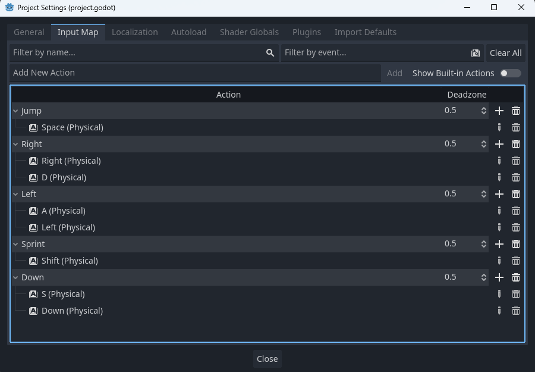
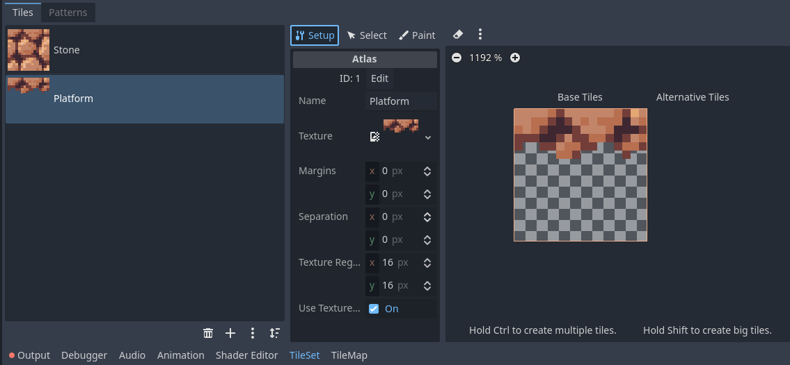

Platforms
Many platformers have platforms that are onlt semi-solid, allowing the player to jump through them. On this page we will add such one-way platforms into our game.
Setting Up the Down Input
In order to allow the player to fall through platforms when they choose, we need to add a new input: the down key. Navigate to your project settings and go to the input map tab. Create a new action named Down and add the required inputs (for me I will be using both the down arrow and S key.)
Adding the Platform Tiles
Next, open up your ground tiles scene. Select the tile map, then the tileset tab in the bottom bar. Press the plus symbol and add a new atlas, using the stone platform sprite from your platforms folder of your VGDC-2025 Assets folder. When the popup appears to automatically create the collision shape, select no.
If you are not taking this course in person, you can download the assets Here
Name the new atlas Platform
Next, go to the Select tab. Select the tile, then find the physics layer 0 section. Using the shape editor, resize the collision shape to fit the sprite, then under polygon 0 check the one way property.

Editing the Player Script
While right now the player can jump through the platforms, they cannot yet fall back through them. To remedy this, navigate to the player script. In the _physics_process function, directly above move and slide, we will add a check if the player is on the ground and pressing the down key, pushing them down on pixel if so. Since we set up our platform to be one way, the engine will handle the rest!
func _physics_process(delta):
var input_axis = Input.get_axis("Left","Right")
apply_gravity(delta)
handle_jump()
apply_acceleration(input_axis,delta)
apply_friction(input_axis,delta)
update_animations(input_axis)
# Before Moving
if is_on_floor() and Input.is_action_just_pressed("Down"): position.y += 1
move_and_slide()And you're done! Go ahead and add some platforms to your level and try them out! Then go ahead and move onto another module!